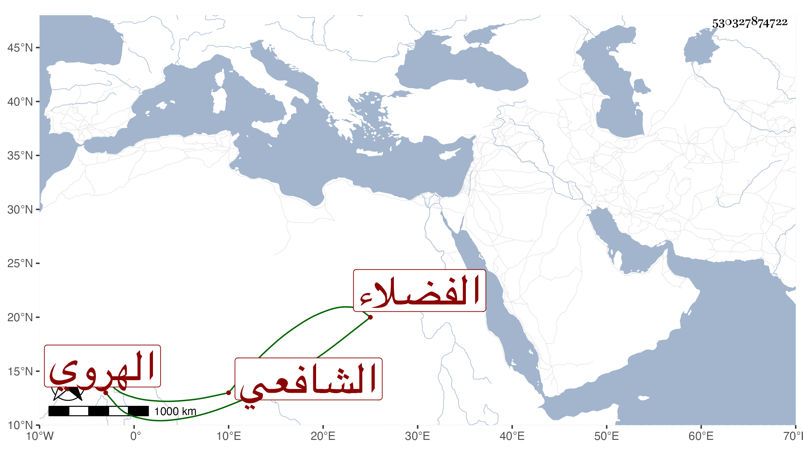

0902Sakhawi.DawLamic.ITO20230111-ara1.EIS1600.530327874722
Biography ID: 530327874722
329
محمد بن يوسف الهروي الشافعي أحد الفضلاء الآتي أبوه ويعرف بابن الحلاج بحاء مهملة ثم لام ثقيلة بعدها جيم . ولد قبيل القرن بيسير وأخذ عن أبيه وغيره وشهد له شيخنا في سنة سبع وثلاثين من أنبائه أنه زكى عارف بالطب وغيره وعلى ذهنه فوائد كثيرة وعنده استعداد قال وكان يزعم أنه يعرف مائة وعشرين علما انتهى . وهو ممن أخذ عنه الفضلاء وانتفعوا به وكان ممن أخذ عنه الخواجا الشهاب أحمد قاوان . مات في .
